Studio historique · Strasbourg
Studio Cathédrale — Strasbourg
Studio cosy à Strasbourg
Le logement, en photos
Photos de l'annonce Airbnb · 12 vues

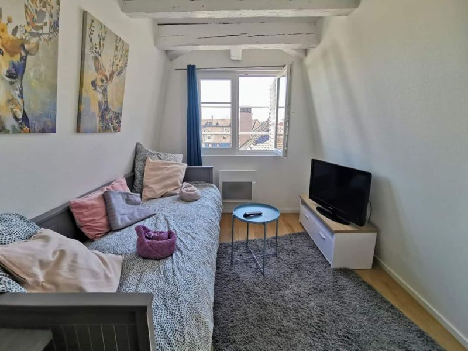
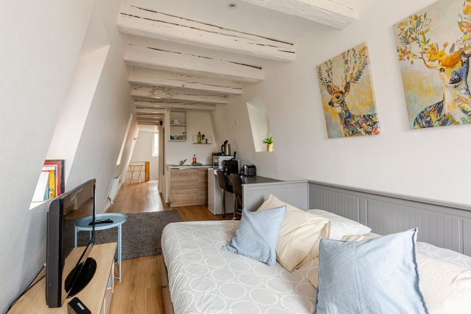
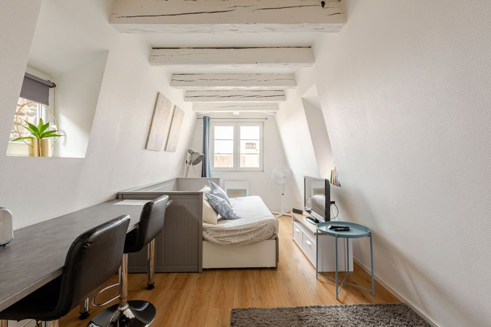
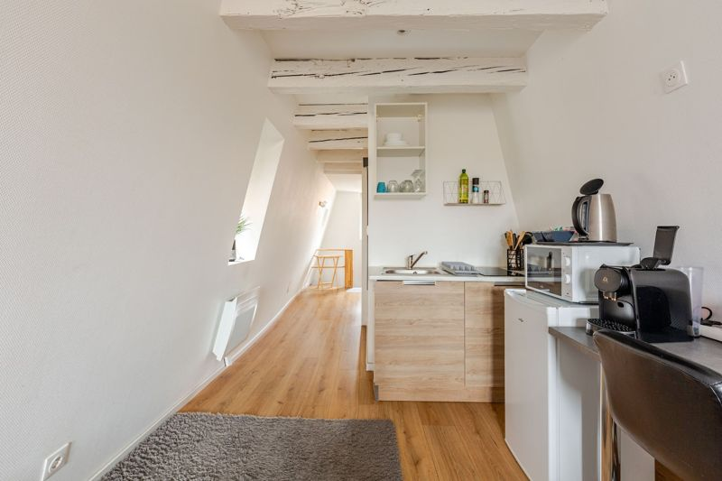
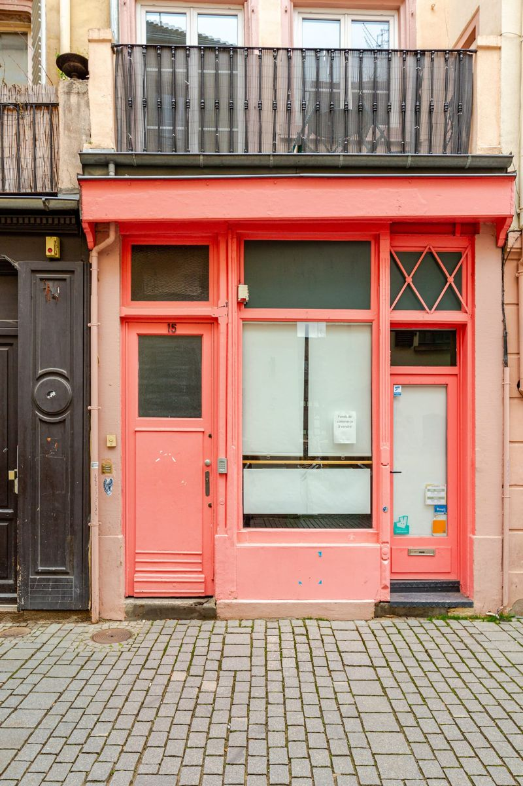
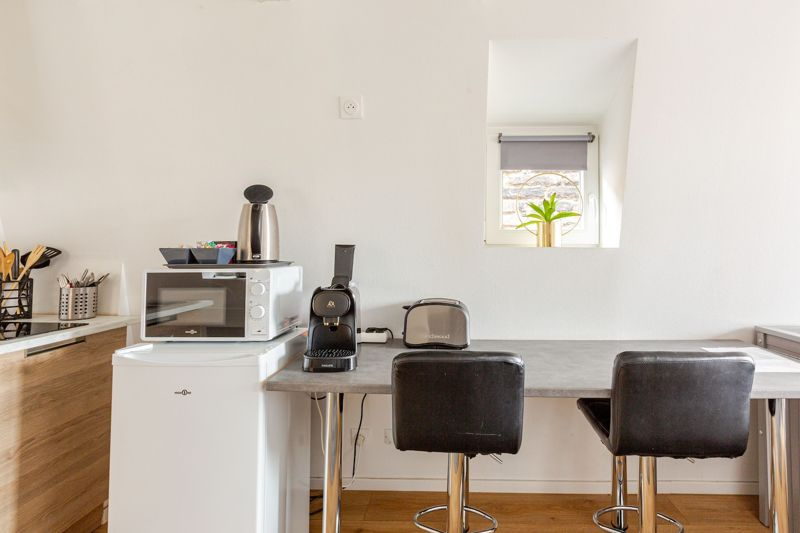
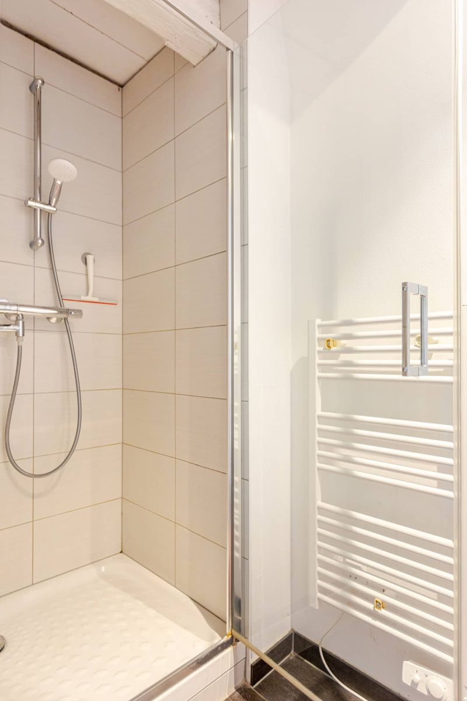
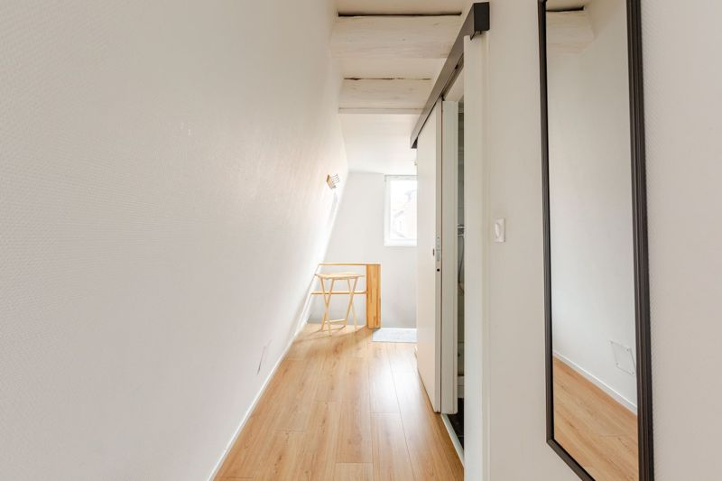
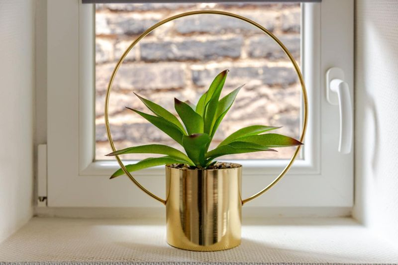
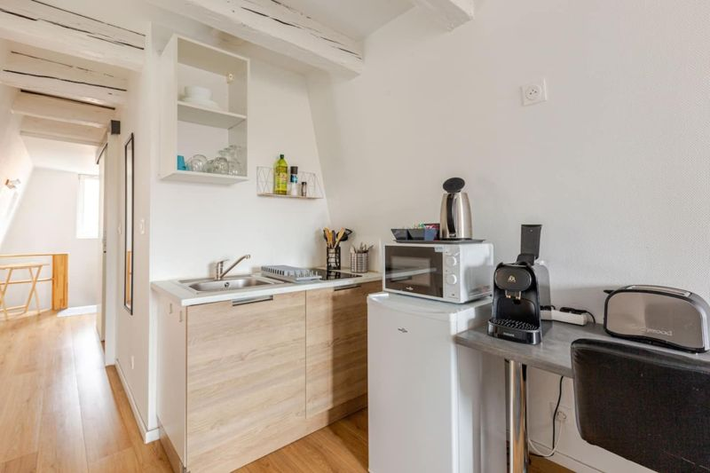
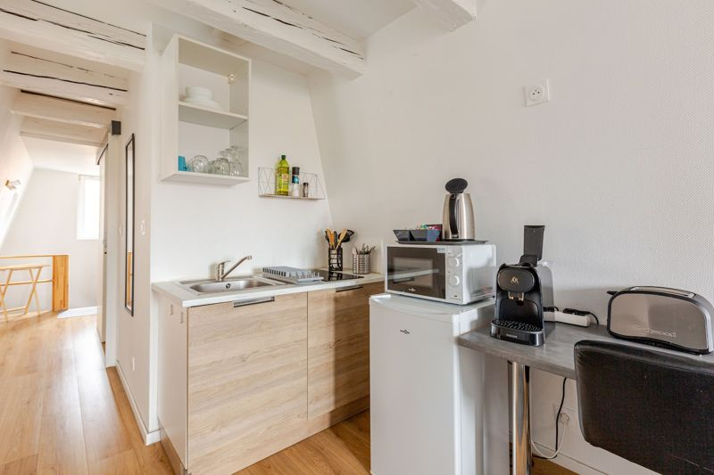
L'essentiel à savoir
Studio cosy à Strasbourg
Quartier de la Cathédrale, au cœur de Strasbourg — zone essentiellement piétonne. Cathédrale, Petite France et place Kléber à quelques minutes à pied. L'adresse exacte est communiquée après la réservation.
Équipements
- Lit 140 × 200
- Kitchenette
- Wi-Fi fibre
- Smart TV
- Draps et serviettes fournis
- 4ᵉ étage sans ascenseur
À proximité
- Cathédrale à 2 min à pied
- Petite France à 10 min
- Parking des Bateliers payant à 5 min
- Zone essentiellement piétonne
Où ça se trouve
Quartier de la Cathédrale
Quartier de la Cathédrale, au cœur de Strasbourg — zone essentiellement piétonne. Cathédrale, Petite France et place Kléber à quelques minutes à pied. L'adresse exacte est communiquée après la réservation.
Cathedral quarter, in the heart of Strasbourg — mostly pedestrian. The Cathedral, Petite France and Kléber square are a few minutes' walk away. Exact address shared after booking.
Questions fréquentes
Avant de réserver
Comment se passe l'arrivée ?
Arrivée 100 % autonome : serrure connectée Igloohome ou boîte à clés selon le logement. Les codes, photos et instructions sont envoyés avant l'arrivée.
Le linge est-il fourni ?
Oui : draps et serviettes fournis dans tous nos logements (1 serviette par voyageur).
Quelle est la politique d'annulation ?
Non remboursable moins de 30 jours avant l'arrivée. L'option « annulation prolongée » Airbnb (petit supplément) permet d'annuler gratuitement jusqu'à 24 h avant.
Peut-on fumer ?
Non, tous nos logements sont non-fumeurs à l'intérieur.
Une date en tête ?
Écrivez-nous, on répond vite
Pour Studio Cathédrale comme pour les autres adresses : dites-nous vos dates, le nombre de voyageurs et ce qui compte pour vous.
Strasbourg · dès 58 € la nuit